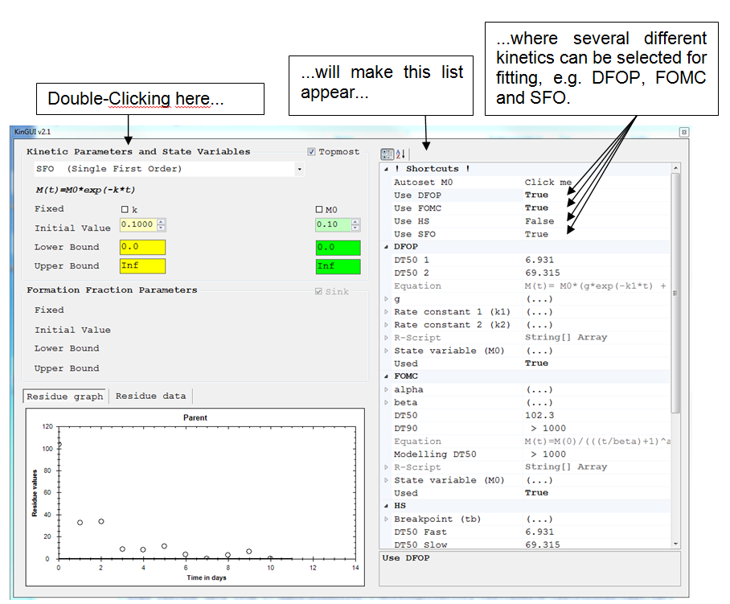

8 Shortcuts for advanced users
2014-01-018.1 Different kinetics for the same residue data
Quite frequently, the same data set has to be evaluated with several different kinetics for the parent. In this case, the user can proceed as follows:
- Open the kinetic input window for parent
- Double-click on "Kinetic Parameters and State Variables" - a list will appear on the right side
- In this list, select the required kinetics (set the value to "True").
- Change the default values of the kinetics (initial values, boundaries) to reasonable estimates.

After running the model, View -> Results will open a result window for each kinetics and an additional window with a comparison of the selected kinetics. Note: Re-opening the kinetic input window or the list within the window resets the choice of the parent kinetics to the single kinetics shown in the kinetic input window. To review the selected kinetics without a reset, check whether an R-Script is created for each of the desired kinetics (View -> Rscript, then select Parent SFO /Parent DFOP / Parent HS / Parent FOMC).
8.2 Different residue data files with the same model structure
It frequently occurs that the same model structure can be used for different data sets, e.g. if several trials are available for the same active substance. For an automated evaluation of all data sets, the user can proceed as follows:
- Put the residue data files into the same directory. Make sure that they have the same column names and that no other .txt files are in the directory.
- Load one of the residue data files and implement the desired model structure. Different parent kinetics may also be used, as described in section 8.1.
- Save the model into an xml file (File -> Save -> KinGUII model). The xml file should be located in the same folder as the .txt files.
- Close KinGUII.
- Open KinGUI, click Data ->Scan multi .txt files and select the xml file. This creates R-files for all data sets and selected kinetics, and batch files to execute these files.
- Execute the created .bat files.
- To view the results: Open a new instance of the KinGUIIResultViewer (..\KinGUIIv2.1\GUI\KINGUIIResultViewer.exe). Select the desired R-file(s) via File > R Script File.
- Note that the same initial parameter values are used for each data file. Therefore, the optimizer may only find a local optimum especially in case of more complex pathways.
8.3 Stepwise fitting approach
In a stepwise fitting approach, compartments or substances are gradually added to the model. KinGUII can perform a stepwise approach based on a single data file, because not all columns need to be assigned to compartments. The KinGUII functions "get initial values" and "reassign residue data" facilitate stepwise fitting:
Get initial values The parameter values obtained from one fit (e.g. for parent only) can be assigned as initial values to another fit (e.g. for parent & metabolite) by using Data -> Get initial values.
Reassign residue data In order to include further columns of the same data file into the evaluation, use Data -> Reassign residue data